4 Data vizualisation
In this session, you will learn how to create graphs. Data visualization serves two primary purposes: data exploration and communication.
- Exploration and description
When we examine our data, a few graphs can provide valuable insights into its distribution and the characteristics of various variables.
- Communication
Additionally, when we analyze data and wish to convey our findings, graphs can be highly effective in conveying key information. This notion is captured by the phrase “A picture is worth a thousand words.” - Valuable skills, communication : lot of jobs (datajournalists). Think about all of the graphs that florishs during the covid 19, https://ourworldindata.org/
- Just because it is beautiful
Furthermore, aesthetics play a significant role, and we appreciate visually pleasing graphs. R is capable of producing exceptionally beautiful graphs, and once you learn how to create them, you may develop a strong dislike for those who rely on Excel graphs for the rest of your life.
4.1 Bad viz
Here details on what makes a good or bad vizualisation.
http://albertocairo.com/
https://visionscarto.net/hieroglyphes-isotype
https://visionscarto.net/la-semiologie-graphique-a-50-ans
Forget about pie charts : One of the first graph that comes in our mind when we think about data vizualisation are pie chart (or camemberts as we say in french). If you have already done that once in your life, I warn you that it will not happen again.
- Do not use double axes
According to briatte slides : use facets/use annotations
If you want to learn more about graphs, I recommand you to read this and this. Healy, Winston Chang : different reasons why graphs might be bad or not (why is this not in the doc anymore, look back at healy, differentces between perception, information etc. )
https://medium.com/(fneves/stop-using-those-ugly-pie-charts-962ac70beb41?) https://www.data-to-viz.com/caveat/pie.html
4.2 The grammar of graphics
There are three main ploting systems available for creating graphs in R. Base R provides functions such as plot(), hist() or boxplot() (you can also explore the lattice package). However, in this session, we will focus on a widely popular package called ggplot. It is a component of the tidyverse, so there is no need to install or load it separately if the tidyverse package is already loaded.
The “gg” in ggplot represents the “grammar of graphics” (Wilkinson 2012). Graphs are constructed by adding various layers to a basic graph, allowing for progressively more complex modifications such as adjusting the title or adding annotations.
To do a graph in ggplot, you need at least three things : a dataframe, aestethics and a geometry.
First the data : a dataframe, in a tidy format : observations as rows and variables as columns
Aesthetics : axe des x, axe des y, couleur, forme des points, type de ligne
You need to add + between each element :syntaxe additive et pas des pipes ! The geometry allows you to specify how you want to represent your data : geom_point(), geom_line().
Not always easy to decide which graph is best at representing the information we want. You can have a look on the data to viz website or the R graph gallery which can help you doing this.
This might be quite abstract at this point but you will see how it works in a few minutes. But before to show you how to do graphs, just a few recommandations on what you should not do. According to Healy, graphs may be bad for three main reasons : aesthethic, substantive and perceptual.
Different layes in ggplot :
- data
- aesthethics mapping
- geom
- facets
- statistics
- coordinates
- themes
4.3 Exploring party politics with graphs
To learn about how to make graphs, we will use the Chapell Hill Expert Survey. I you are interested in political parties, it is definitely a dataset you should know. Basically, every 4 years, hundreds of experts in different countries are asked to locate political parties on different scales (eg : locating a party on a left-right scale from 0 to 10). The goal is to have an valid overview of where do parties stand in different issues on different countries. To use the data, I read directly the link of the CHES trend stata file that is available on the CHES’s website.
library(tidyverse) # Load the tidyverse that contains the ggplot package
ches <- haven::read_dta("https://www.chesdata.eu/s/1999-2019_CHES_dataset_meansv3.dta")
ches |> glimpse()Rows: 1,196
Columns: 84
$ country <dbl+lbl> 1, 1, 1, 1, 1, 1, 1, 1, 1, 1, 1, 1, 1, 1, 1…
$ eastwest <dbl+lbl> 1, 1, 1, 1, 1, 1, 1, 1, 1, 1, 1, 1, 1, 1, 1…
$ eumember <dbl+lbl> 1, 1, 1, 1, 1, 1, 1, 1, 1, 1, 1, 1, 1, 1, 1…
$ year <dbl> 1999, 1999, 1999, 1999, 1999, 1999, 1999, 1999,…
$ expert <dbl> 9, 9, 9, 9, 9, 9, 9, 9, 9, 9, 9, 9, 9, 9, 11, 1…
$ party_id <dbl> 115, 109, 107, 106, 110, 111, 103, 113, 114, 10…
$ cmp_id <dbl> NA, 21521, 21421, 21422, 21913, 21912, 21321, N…
$ party <chr> "FN", "CVP", "PVV/VLD", "PRL", "VU", "FDF", "SP…
$ vote <dbl> 1.5, 14.1, 14.3, 7.7, 5.6, 2.4, 9.6, NA, NA, 5.…
$ seat <dbl> 0.7, 14.7, 15.3, 9.0, 5.3, 3.0, 9.3, NA, NA, 6.…
$ electionyear <dbl> 1999, 1999, 1999, 1999, 1999, 1999, 1999, 1999,…
$ epvote <dbl> 1.52, 13.49, 13.61, 6.69, 7.57, 3.34, 8.84, NA,…
$ family <dbl+lbl> 1, 4, 3, 3, 8, 8, 5, 4, 8, 4, 5, 7, 1, 7, 5…
$ govt <dbl+lbl> 0.0, 0.5, 0.5, 0.5, 0.0, 0.0, 1.0, 0.0, 0.0…
$ eu_position <dbl+lbl> 2.142857, 6.888889, 6.666667, 6.555555, 5.0…
$ eu_salience <dbl> 1.562500, 4.722222, 4.166667, 4.166667, 3.61111…
$ eu_dissent <dbl> 2.0833335, 0.8333334, 0.8333334, 0.8333334, 1.8…
$ eu_blur <dbl> NA, NA, NA, NA, NA, NA, NA, NA, NA, NA, NA, NA,…
$ eu_benefit <dbl> NA, NA, NA, NA, NA, NA, NA, NA, NA, NA, NA, NA,…
$ eu_ep <dbl+lbl> 4.000000, 6.250000, 6.250000, 6.250000, 6.0…
$ eu_fiscal <dbl+lbl> 2.800000, 6.000000, 5.625000, 5.625000, 5.2…
$ eu_intmark <dbl+lbl> NA, NA, NA, NA, NA, NA, NA, …
$ eu_employ <dbl+lbl> 2.500000, 5.666667, 4.625000, 4.625000, 5.4…
$ eu_budgets <dbl> NA, NA, NA, NA, NA, NA, NA, NA, NA, NA, NA, NA,…
$ eu_agri <dbl+lbl> NA, NA, NA, NA, NA, NA, NA, …
$ eu_cohesion <dbl+lbl> 1.666667, 5.875000, 5.375000, 5.625000, 5.3…
$ eu_environ <dbl+lbl> 3.600000, 5.555555, 5.125000, 5.000000, 5.4…
$ eu_asylum <dbl+lbl> 1.250000, 5.555555, 5.500000, 5.500000, 5.0…
$ eu_foreign <dbl+lbl> 2.000000, 6.555555, 6.555555, 6.555555, 4.8…
$ eu_turkey <dbl+lbl> NA, NA, NA, NA, NA, NA, NA, …
$ lrgen <dbl+lbl> 9.888889, 5.777778, 7.111111, 6.666667, 5.1…
$ lrecon <dbl+lbl> 8.750000, 5.750000, 7.625000, 7.000000, 5.0…
$ lrecon_salience <dbl> NA, NA, NA, NA, NA, NA, NA, NA, NA, NA, NA, NA,…
$ lrecon_dissent <dbl> NA, NA, NA, NA, NA, NA, NA, NA, NA, NA, NA, NA,…
$ lrecon_blur <dbl> NA, NA, NA, NA, NA, NA, NA, NA, NA, NA, NA, NA,…
$ galtan <dbl+lbl> 9.750000, 7.375000, 5.125000, 4.714286, 4.0…
$ galtan_salience <dbl> NA, NA, NA, NA, NA, NA, NA, NA, NA, NA, NA, NA,…
$ galtan_dissent <dbl> NA, NA, NA, NA, NA, NA, NA, NA, NA, NA, NA, NA,…
$ galtan_blur <dbl> NA, NA, NA, NA, NA, NA, NA, NA, NA, NA, NA, NA,…
$ spendvtax <dbl> NA, NA, NA, NA, NA, NA, NA, NA, NA, NA, NA, NA,…
$ spendvtax_salience <dbl> NA, NA, NA, NA, NA, NA, NA, NA, NA, NA, NA, NA,…
$ deregulation <dbl> NA, NA, NA, NA, NA, NA, NA, NA, NA, NA, NA, NA,…
$ dereg_salience <dbl> NA, NA, NA, NA, NA, NA, NA, NA, NA, NA, NA, NA,…
$ redistribution <dbl> NA, NA, NA, NA, NA, NA, NA, NA, NA, NA, NA, NA,…
$ redist_salience <dbl> NA, NA, NA, NA, NA, NA, NA, NA, NA, NA, NA, NA,…
$ econ_interven <dbl> NA, NA, NA, NA, NA, NA, NA, NA, NA, NA, NA, NA,…
$ civlib_laworder <dbl> NA, NA, NA, NA, NA, NA, NA, NA, NA, NA, NA, NA,…
$ civlib_salience <dbl> NA, NA, NA, NA, NA, NA, NA, NA, NA, NA, NA, NA,…
$ sociallifestyle <dbl> NA, NA, NA, NA, NA, NA, NA, NA, NA, NA, NA, NA,…
$ social_salience <dbl> NA, NA, NA, NA, NA, NA, NA, NA, NA, NA, NA, NA,…
$ religious_principles <dbl> NA, NA, NA, NA, NA, NA, NA, NA, NA, NA, NA, NA,…
$ relig_salience <dbl> NA, NA, NA, NA, NA, NA, NA, NA, NA, NA, NA, NA,…
$ immigrate_policy <dbl> NA, NA, NA, NA, NA, NA, NA, NA, NA, NA, NA, NA,…
$ immigrate_salience <dbl> NA, NA, NA, NA, NA, NA, NA, NA, NA, NA, NA, NA,…
$ immigrate_dissent <dbl> NA, NA, NA, NA, NA, NA, NA, NA, NA, NA, NA, NA,…
$ multiculturalism <dbl> NA, NA, NA, NA, NA, NA, NA, NA, NA, NA, NA, NA,…
$ multicult_salience <dbl> NA, NA, NA, NA, NA, NA, NA, NA, NA, NA, NA, NA,…
$ multicult_dissent <dbl> NA, NA, NA, NA, NA, NA, NA, NA, NA, NA, NA, NA,…
$ urban_rural <dbl> NA, NA, NA, NA, NA, NA, NA, NA, NA, NA, NA, NA,…
$ urban_salience <dbl> NA, NA, NA, NA, NA, NA, NA, NA, NA, NA, NA, NA,…
$ environment <dbl> NA, NA, NA, NA, NA, NA, NA, NA, NA, NA, NA, NA,…
$ enviro_salience <dbl> NA, NA, NA, NA, NA, NA, NA, NA, NA, NA, NA, NA,…
$ cosmo <dbl> NA, NA, NA, NA, NA, NA, NA, NA, NA, NA, NA, NA,…
$ cosmo_salience <dbl> NA, NA, NA, NA, NA, NA, NA, NA, NA, NA, NA, NA,…
$ protectionism <dbl> NA, NA, NA, NA, NA, NA, NA, NA, NA, NA, NA, NA,…
$ regions <dbl> NA, NA, NA, NA, NA, NA, NA, NA, NA, NA, NA, NA,…
$ region_salience <dbl> NA, NA, NA, NA, NA, NA, NA, NA, NA, NA, NA, NA,…
$ international_security <dbl> NA, NA, NA, NA, NA, NA, NA, NA, NA, NA, NA, NA,…
$ international_salience <dbl> NA, NA, NA, NA, NA, NA, NA, NA, NA, NA, NA, NA,…
$ us <dbl> NA, NA, NA, NA, NA, NA, NA, NA, NA, NA, NA, NA,…
$ us_salience <dbl> NA, NA, NA, NA, NA, NA, NA, NA, NA, NA, NA, NA,…
$ ethnic_minorities <dbl> NA, NA, NA, NA, NA, NA, NA, NA, NA, NA, NA, NA,…
$ ethnic_salience <dbl> NA, NA, NA, NA, NA, NA, NA, NA, NA, NA, NA, NA,…
$ nationalism <dbl> NA, NA, NA, NA, NA, NA, NA, NA, NA, NA, NA, NA,…
$ russian_interference <dbl> NA, NA, NA, NA, NA, NA, NA, NA, NA, NA, NA, NA,…
$ anti_islam_rhetoric <dbl> NA, NA, NA, NA, NA, NA, NA, NA, NA, NA, NA, NA,…
$ people_vs_elite <dbl> NA, NA, NA, NA, NA, NA, NA, NA, NA, NA, NA, NA,…
$ antielite_salience <dbl> NA, NA, NA, NA, NA, NA, NA, NA, NA, NA, NA, NA,…
$ corrupt_salience <dbl> NA, NA, NA, NA, NA, NA, NA, NA, NA, NA, NA, NA,…
$ members_vs_leadership <dbl> NA, NA, NA, NA, NA, NA, NA, NA, NA, NA, NA, NA,…
$ mip_one <dbl+lbl> NA, NA, NA, NA, NA, NA, NA, NA, NA, NA, NA,…
$ mip_two <dbl+lbl> NA, NA, NA, NA, NA, NA, NA, NA, NA, NA, NA,…
$ mip_three <dbl+lbl> NA, NA, NA, NA, NA, NA, NA, NA, NA, NA, NA,…
$ chesversion <dbl> 2020.1, 2020.1, 2020.1, 2020.1, 2020.1, 2020.1,…n_distinct(ches$country)[1] 28n_distinct(ches$year)[1] 6n_distinct(ches$party_id)[1] 424The dataset covers information on 424 different political parties, on 6 different waves and in 28 different countries. From the list of variables we can see that a few of them gives us variables on the year, the country, the party, its vote share and number of seats for a given wave and then a lot of variables on different issues. Broadly, we can distinguish between positions, salience, blurring and dissent.
For instance, I want to know how political parties in Europe care about russian interference in their country. There is a russian_interference in the CHES on this asking the salience of Russian interference in domestic affaires for the party leasdership : going from No importance to Great importance. The first think we would like to know is how this variable is distributed. To do this we could first calculate some descriptive statistics.
summary(ches$russian_interference) Min. 1st Qu. Median Mean 3rd Qu. Max. NA's
0.0000 0.9231 2.5556 2.6381 4.0648 9.4545 949 The first thing we can see is that there are a lot of NAs. If you have not looked at the codebook carefully, you could wonder why. And this is because our dataset is composed with different waves at different years and the questions. One way to check it is to look at the mean by groups for different years. We see that there are no values before 2019.
ches |> group_by(year) |>
summarise(m = mean(russian_interference, na.rm = T))# A tibble: 6 × 2
year m
<dbl> <dbl>
1 1999 NaN
2 2002 NaN
3 2006 NaN
4 2010 NaN
5 2014 NaN
6 2019 2.64But we would have a better understanding on how the values are distributed with a vizualization. With this we know that most of the parties do not think it is important, the mean is quite low and there only a few parties above the mean. But the most important know is to understand how does this vary across different groups such as countries, families to understand why some partis more than other think russian interference is a problem.
Let’s first have a look on how the data is distributed. For this I create a ggplot with the russian_interference variable and I add a geom_histogram(). This function can take a bin argument where you can specify the number of bins you want in your graph.
ches |>
ggplot(aes(russian_interference)) +
geom_histogram(bins = 30)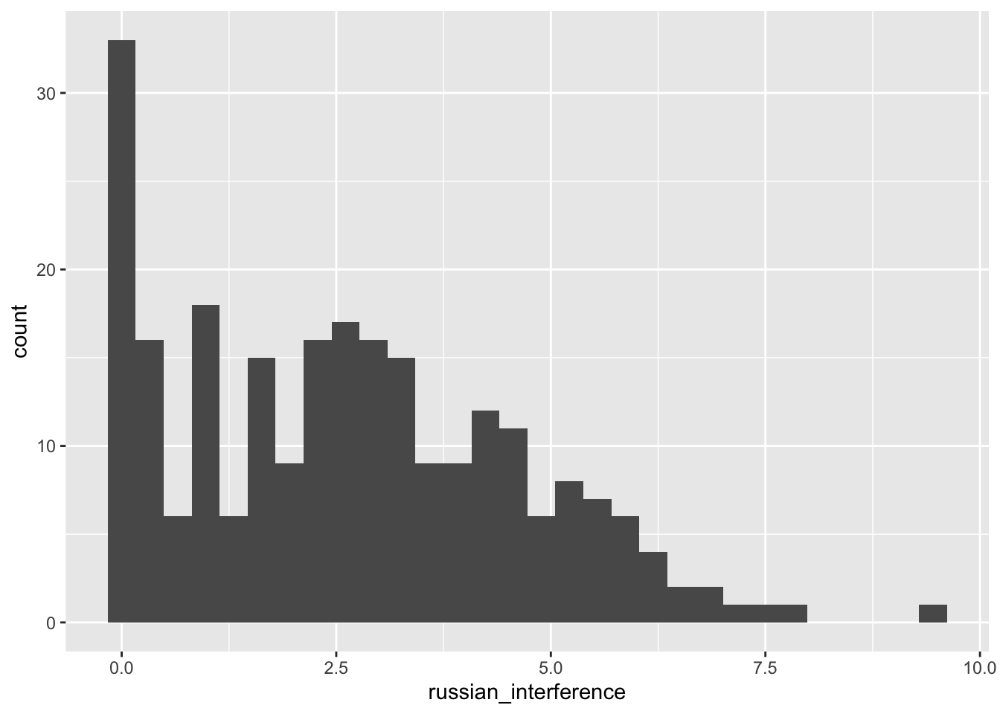
We might assume that however, there is some variance across countries. Looking at the codebook, we see that there is an eastwest variable in the dataset distinguishing western and eastern european countries. The data is coded as 0 or 1 with a label coming from Stata. However, I want to replace these and I use the unlabelled function from the labelled package for this, that allows me to convert the 0 and 1 to their labels.
ches |> count(eastwest)# A tibble: 2 × 2
eastwest n
<dbl+lbl> <int>
1 0 [east] 439
2 1 [west] 757ches <- ches |> mutate(eastwest = labelled::unlabelled(eastwest))
ches |> count(eastwest)# A tibble: 2 × 2
eastwest n
<fct> <int>
1 east 439
2 west 757To see whether the salience of russian interferance varies across region, we need to plot a bivariate graphs where we can compare the two distributions. A first way to do this is to differentiate the region by color.
ches |>
ggplot(aes(russian_interference, fill = eastwest)) +
geom_histogram(bins = 10)Warning: Removed 949 rows containing non-finite values (`stat_bin()`).
However, as the two colors, overlap, it might be easier to have the two graphs side by side. This can be done by adding a layer with facet_wrap().
ches |>
ggplot(aes(russian_interference)) +
geom_histogram(bins = 10) +
facet_wrap(~ eastwest)Warning: Removed 949 rows containing non-finite values (`stat_bin()`).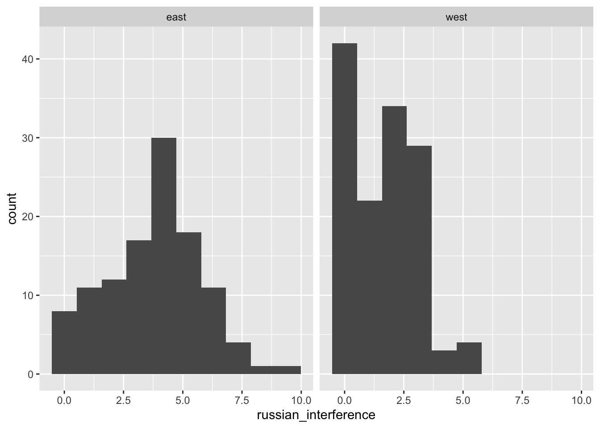
Here we can see that our intuition was correct. Comparing the two i
ches |>
ggplot(aes(eastwest, russian_interference)) +
geom_boxplot()Warning: Removed 949 rows containing non-finite values (`stat_boxplot()`).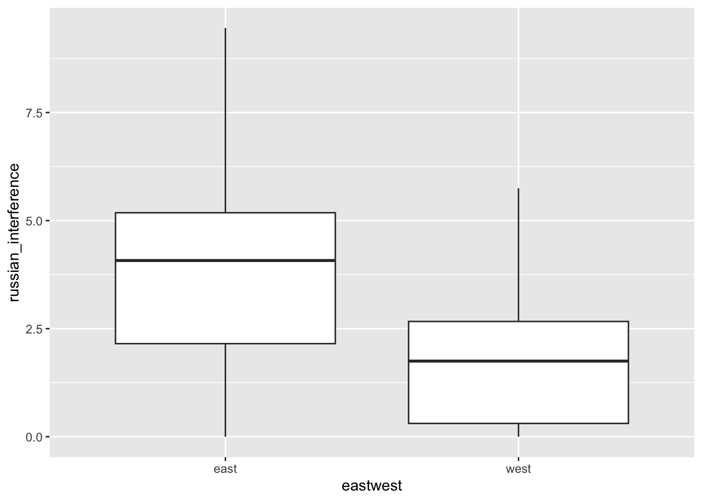
ches |>
ggplot(aes(russian_interference, y = after_stat(density))) +
geom_freqpoly(aes(color = as.factor(eastwest)))`stat_bin()` using `bins = 30`. Pick better value with `binwidth`.Warning: Removed 949 rows containing non-finite values (`stat_bin()`).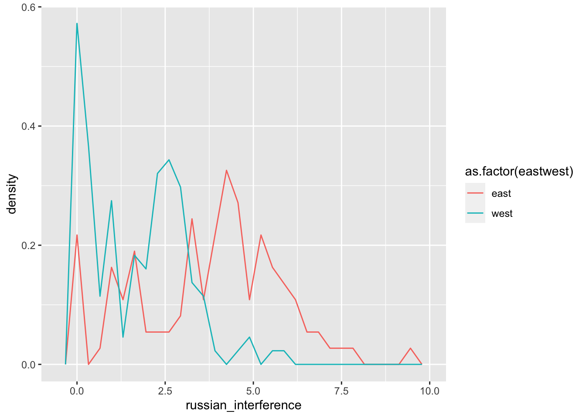
We can also look at how this varies across countries. As the ches$country variable is coded by countrycodes that are not meaningful, I also convert them with their labels as I did for the region.
ches <- ches |> mutate(country = labelled::unlabelled(country))
ches |> count(country)# A tibble: 28 × 2
country n
<fct> <int>
1 be 72
2 dk 55
3 ge 45
4 gr 40
5 esp 74
6 fr 61
7 irl 41
8 it 84
9 nl 61
10 uk 42
# ℹ 18 more rowsches |>
group_by(eastwest, country) |>
summarise(mean_russ = mean(russian_interference, na.rm = TRUE)) |>
ggplot(aes(fct_reorder(country, mean_russ), mean_russ, fill = as.factor(eastwest))) +
geom_col() +
coord_flip() +
scale_x_discrete("Country") +
scale_y_continuous("Salience of russian interference") +
scale_fill_brewer("Region", palette = "Set1") +
theme_minimal()`summarise()` has grouped output by 'eastwest'. You can override using the
`.groups` argument.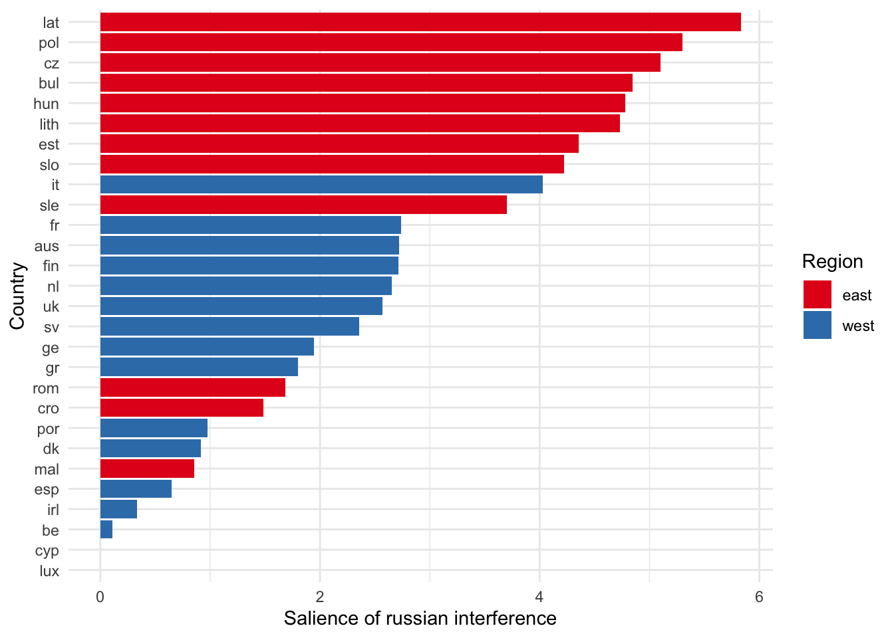
ches <- ches |>
mutate(family = as.factor(family)) |>
filter(family %in% c(1:7)) |>
mutate(family = case_match(
family,
"1" ~ "Droite Radicale",
"2" ~ "Conservateurs",
"3" ~ "Libéraux",
"4" ~ "Chrétiens-Democrates",
"5" ~ "Socialistes",
"6" ~ "Gauche Radicale",
"7" ~ "Verts",
))ches |>
ggplot(aes(lrgen, russian_interference)) +
geom_point() +
geom_smooth(method = "lm")`geom_smooth()` using formula = 'y ~ x'Warning: Removed 760 rows containing non-finite values (`stat_smooth()`).Warning: Removed 760 rows containing missing values (`geom_point()`).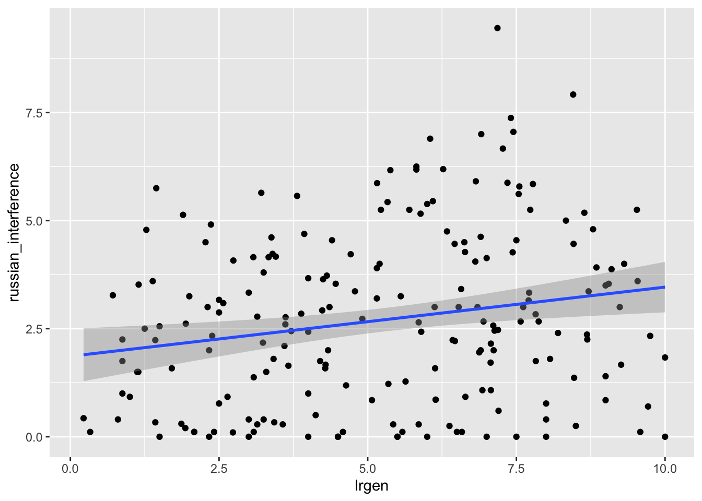
ches |>
ggplot(aes(lrgen, russian_interference, color = eastwest)) +
geom_point() +
geom_smooth(method = "lm")`geom_smooth()` using formula = 'y ~ x'Warning: Removed 760 rows containing non-finite values (`stat_smooth()`).
Removed 760 rows containing missing values (`geom_point()`).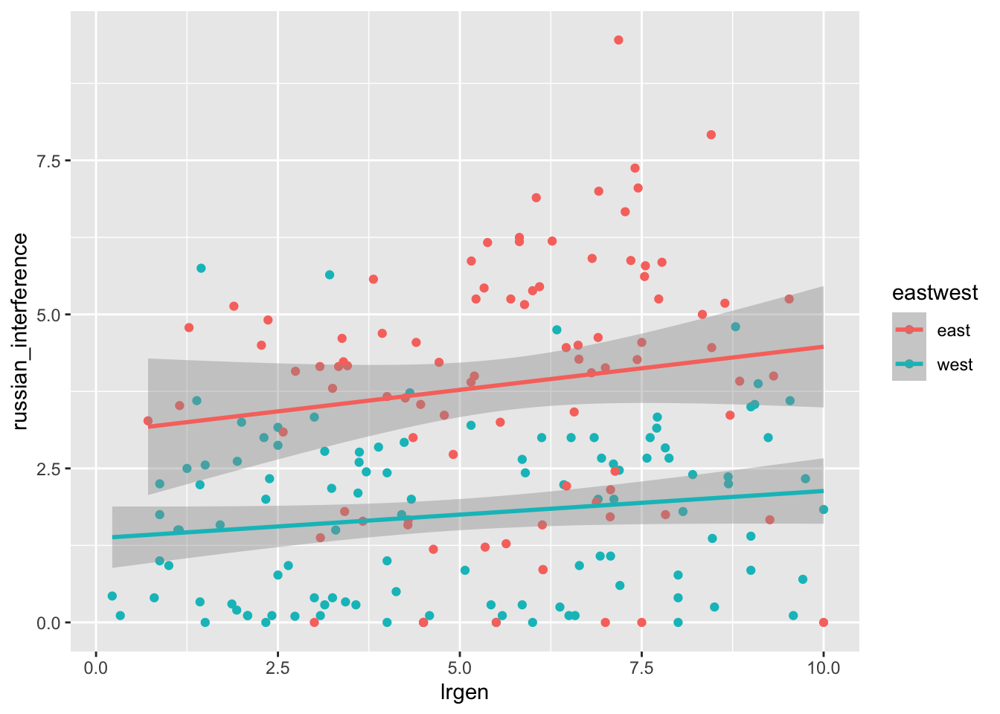
ches |>
ggplot(aes(
fct_reorder(as.factor(govt), russian_interference),
russian_interference, fill = eastwest)) +
geom_boxplot() Warning: `fct_reorder()` removing 760 missing values.
ℹ Use `.na_rm = TRUE` to silence this message.
ℹ Use `.na_rm = FALSE` to preserve NAs.
`fct_reorder()` removing 760 missing values.
ℹ Use `.na_rm = TRUE` to silence this message.
ℹ Use `.na_rm = FALSE` to preserve NAs.Warning: Removed 760 rows containing non-finite values (`stat_boxplot()`).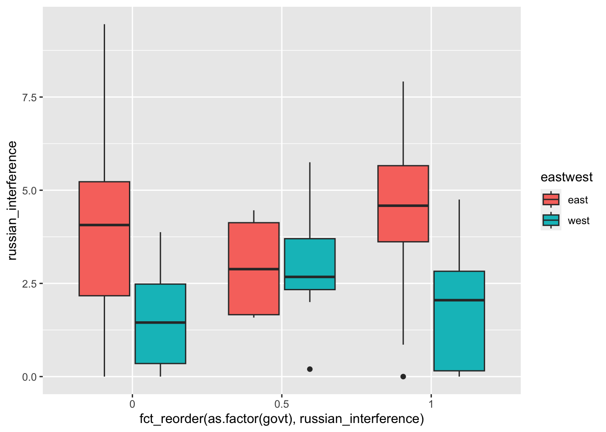
ches |>
filter(eastwest == "east") |>
ggplot(aes(
fct_reorder(family, russian_interference),
russian_interference,
fill = as.factor(govt))) +
geom_boxplot() Warning: `fct_reorder()` removing 269 missing values.
ℹ Use `.na_rm = TRUE` to silence this message.
ℹ Use `.na_rm = FALSE` to preserve NAs.Warning: `fct_reorder()` removing 269 missing values.
ℹ Use `.na_rm = TRUE` to silence this message.
ℹ Use `.na_rm = FALSE` to preserve NAs.Warning: Removed 269 rows containing non-finite values (`stat_boxplot()`).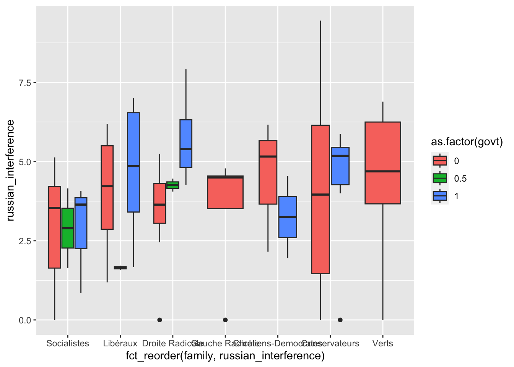
ches$international_security [1] NA NA NA NA NA NA NA NA
[9] NA NA NA NA NA NA NA NA
[17] NA NA NA NA NA NA NA NA
[25] NA NA NA NA NA 5.500000 6.454545 7.833333
[33] 4.181818 3.727273 4.909091 7.000000 6.090909 4.500000 6.545455 3.818182
[41] 5.000000 4.800000 5.800000 3.400000 5.800000 7.200000 7.800000 3.400000
[49] 7.200000 4.800000 3.400000 6.000000 NA NA NA NA
[57] NA NA NA NA NA NA NA NA
[65] NA NA NA NA NA NA NA NA
[73] NA NA NA NA NA NA NA NA
[81] NA NA NA NA 7.100000 3.750000 5.400000 4.300000
[89] 4.100000 3.000000 3.000000 3.800000 3.222222 3.777778 7.777778 6.000000
[97] 1.666667 4.333333 4.000000 2.000000 NA NA NA NA
[105] NA NA NA NA NA NA NA NA
[113] NA NA NA NA NA NA NA NA
[121] NA NA NA NA NA NA NA NA
[129] NA NA 2.800000 5.866667 8.066667 4.066667 3.461539 2.642857
[137] 7.000000 5.090909 8.800000 7.000000 4.222222 4.636364 4.090909 5.363636
[145] NA NA NA NA NA NA NA NA
[153] NA NA NA NA NA NA NA NA
[161] NA NA NA NA NA NA NA NA
[169] 5.888889 5.250000 8.363636 8.666667 3.800000 4.000000 9.090909 5.285714
[177] 4.428571 5.142857 5.000000 9.000000 4.714286 4.375000 4.714286 7.000000
[185] NA NA NA NA NA NA NA NA
[193] NA NA NA NA NA NA NA NA
[201] NA NA NA 3.363636 3.909091 5.900000 3.833333 2.444444
[209] 7.000000 4.000000 2.666667 7.500000 7.111111 NA NA NA
[217] NA NA NA NA NA NA NA NA
[225] NA NA NA NA NA NA NA NA
[233] NA NA NA NA NA NA NA NA
[241] NA NA NA NA NA NA NA NA
[249] 7.333333 5.875000 6.400000 7.000000 5.000000 3.375000 5.400000 5.166667
[257] 5.000000 6.300000 4.400000 3.300000 4.000000 7.142857 3.800000 6.222222
[265] 5.200000 4.000000 4.250000 4.250000 5.000000 2.777778 NA NA
[273] NA NA NA NA NA NA NA NA
[281] NA NA NA NA NA NA NA NA
[289] NA NA NA NA NA NA NA 3.833333
[297] 3.833333 5.166667 7.714286 6.833333 8.000000 8.000000 4.200000 4.000000
[305] 6.200000 4.000000 NA NA NA NA NA NA
[313] NA NA NA NA NA NA NA NA
[321] NA NA NA NA NA NA NA NA
[329] NA NA NA NA NA NA NA NA
[337] NA NA NA NA NA NA NA NA
[345] NA NA NA NA NA NA NA NA
[353] 7.142857 5.000000 3.285714 6.500000 7.666667 7.400000 3.625000 8.250000
[361] 2.250000 2.571429 4.000000 3.000000 3.500000 3.600000 2.600000 4.600000
[369] 8.200000 9.000000 2.400000 NA NA NA NA NA
[377] NA NA NA NA NA NA NA NA
[385] NA NA NA NA NA NA NA NA
[393] NA NA NA NA NA NA 2.400000 5.000000
[401] 2.100000 5.300000 4.000000 7.200000 5.600000 7.100000 3.500000 5.125000
[409] 4.375000 7.500000 7.500000 7.333333 3.625000 3.125000 NA NA
[417] NA NA NA NA NA NA NA NA
[425] NA NA NA NA NA NA NA NA
[433] NA NA NA NA 5.857143 2.923077 3.076923 4.538462
[441] 4.500000 7.900000 6.800000 5.000000 4.285714 4.571429 3.714286 NA
[449] NA NA NA NA NA NA NA NA
[457] NA NA NA NA NA NA NA NA
[465] NA NA NA 3.000000 3.166667 7.000000 2.666667 7.000000
[473] 9.200000 9.200000 6.000000 3.000000 4.000000 3.200000 NA NA
[481] NA NA NA NA NA NA NA NA
[489] NA NA NA NA NA NA NA NA
[497] NA NA NA NA NA NA 6.230769 5.153846
[505] 6.000000 6.000000 4.076923 7.111111 5.400000 5.600000 5.000000 6.000000
[513] 7.500000 NA NA NA NA NA NA NA
[521] NA NA NA NA NA NA NA NA
[529] NA NA NA NA NA 5.111111 4.555555 5.111111
[537] 5.888889 5.777778 5.222222 4.571429 6.000000 4.125000 5.000000 5.714286
[545] NA NA NA NA NA NA NA NA
[553] NA NA NA NA NA NA NA NA
[561] NA NA NA NA NA NA NA NA
[569] NA 2.500000 7.642857 5.000000 6.785714 3.285714 2.785714 7.125000
[577] 3.714286 2.210526 6.352941 3.894737 6.368421 7.473684 2.526316 3.263158
[585] NA NA NA NA NA NA NA NA
[593] NA NA NA NA NA NA NA NA
[601] NA NA 8.250000 5.000000 5.750000 6.666667 3.285714 3.857143
[609] 5.571429 3.875000 3.500000 3.600000 3.642857 9.214286 3.200000 8.461538
[617] 6.166667 4.833333 8.000000 6.285714 NA NA NA NA
[625] NA NA NA NA NA NA NA NA
[633] NA NA NA NA NA NA NA NA
[641] 4.062500 2.625000 4.636364 2.000000 8.562500 5.875000 5.400000 6.700000
[649] 4.818182 5.111111 3.000000 2.250000 2.416667 4.583333 8.416667 NA
[657] NA NA NA NA NA NA NA NA
[665] NA NA 2.083333 1.727273 5.333333 4.500000 3.000000 2.400000
[673] 1.125000 1.375000 1.000000 1.285714 3.571429 NA NA NA
[681] NA NA NA NA NA NA NA NA
[689] NA NA NA NA NA 3.300000 5.200000 4.857143
[697] 8.142858 6.090909 3.642857 4.214286 3.181818 5.545455 8.545455 3.909091
[705] 5.181818 NA NA NA NA NA NA NA
[713] NA NA NA NA NA NA NA NA
[721] NA NA NA NA NA NA NA NA
[729] 3.571429 5.125000 3.500000 6.750000 3.250000 7.625000 2.000000 8.857142
[737] 3.875000 6.500000 2.250000 NA NA NA NA NA
[745] NA NA NA NA NA NA NA NA
[753] NA NA NA NA NA NA NA NA
[761] NA NA NA NA 4.000000 4.900000 3.083333 5.454545
[769] 3.600000 3.916667 4.000000 5.000000 7.571429 3.454545 5.200000 4.090909
[777] 5.444445 3.363636 NA NA NA NA NA NA
[785] NA NA NA NA NA NA NA NA
[793] NA NA NA NA 2.428571 5.000000 4.428571 4.214286
[801] 4.272727 8.181818 3.764706 5.111111 5.058824 5.100000 3.588235 6.266667
[809] NA NA NA NA NA NA NA NA
[817] NA NA NA NA NA NA NA NA
[825] NA NA 2.523809 7.600000 4.714286 5.294117 5.000000 2.785714
[833] 3.133333 4.090909 3.076923 3.200000 3.785714 2.600000 NA NA
[841] NA NA NA NA NA NA NA NA
[849] NA NA NA NA NA NA NA NA
[857] NA 7.500000 4.600000 8.428572 4.307693 5.307693 4.727273 4.272727
[865] 3.461539 5.230769 4.125000 8.000000 5.000000 4.363636 5.250000 3.285714
[873] 4.800000 NA NA NA NA NA NA NA
[881] NA NA NA NA NA NA NA NA
[889] NA NA NA NA NA NA NA NA
[897] NA 5.000000 5.000000 7.222222 3.818182 5.714286 4.818182 3.818182
[905] 2.666667 3.000000 6.714286 5.833333 4.833333 3.000000 4.400000 NA
[913] NA NA NA NA NA NA 3.500000 7.000000
[921] 4.400000 2.125000 4.400000 6.200000 3.714286 3.375000 NA NA
[929] NA NA NA NA NA NA NA 7.333333
[937] 4.333333 NA NA 5.000000 3.000000 1.500000 1.500000 1.500000
[945] 8.500000 NA NA NA NA NA NA 5.000000
[953] 1.500000 4.000000 2.000000 4.000000 9.500000 NA NA NA
[961] NA NA NA NA
attr(,"label")
[1] "position: international security and peacekeeping missions"
attr(,"format.stata")
[1] "%8.0g"5 Bivariate plots
ches |>
filter(eastwest == "west") |> # Keep only the west european countries
ggplot(aes(lrgen, eu_position)) + # Aesthtetics
geom_point() +
geom_smooth(col = "steelblue") +
# Now we can change different things
theme_minimal() +
scale_x_continuous("Left-Right position") +
scale_y_continuous("EU position") +
facet_wrap(~ year)`geom_smooth()` using method = 'loess' and formula = 'y ~ x'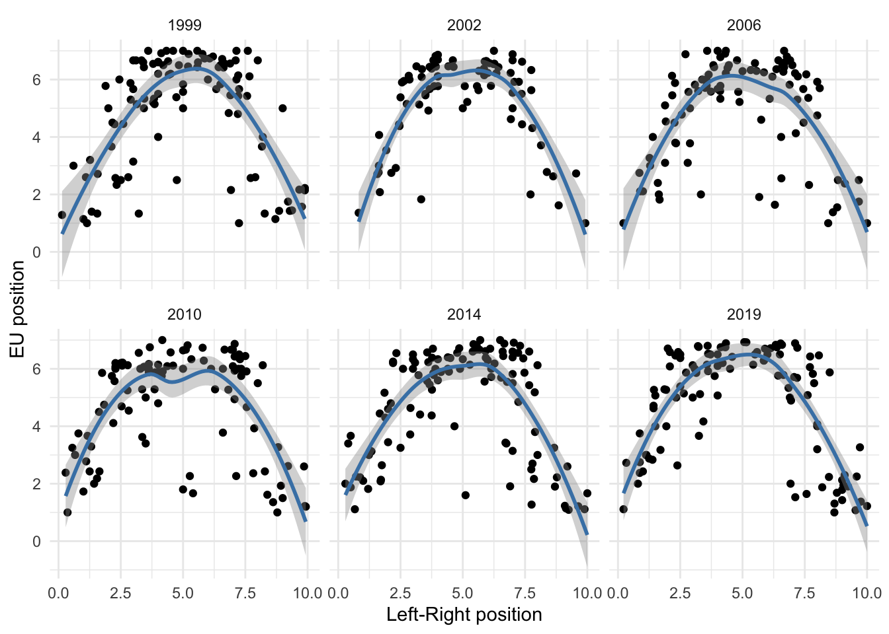
ches |>
ggplot(aes(lrecon, galtan, color = family)) + # Aesthtetics
geom_point(alpha = 0.5) +
geom_hline(yintercept = 5, linetype = "dotted") +
geom_vline(xintercept = 5, linetype = "dotted") +
# Now we can change different things
theme_light() +
scale_x_continuous("GAL/TAN") +
scale_y_continuous("Economic Left Right") +
facet_wrap(~ eastwest)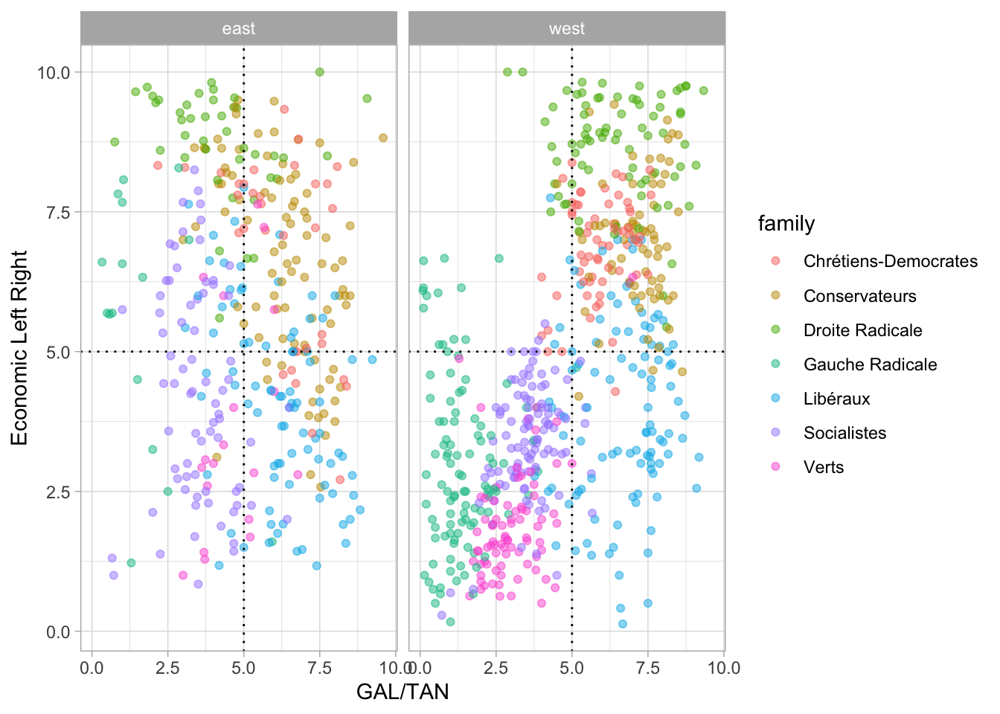
Now you should be able to do the following things :
- Add different geoms
- Add lines
Aussi montrer des geom bar, des geom line dans le temps, des geom col, des geom histogram
5.1 Combine different graphs
5.2 Export graphs
5.2.1 Exercice 3 : vizualising political parties
Download and import the Chapell Hill Expert Survey trend file into Rstudio
Explore the codebook to see the variables available in this dataset and choose one of your interest1.
Using graphs, provide a brief analysis of how political parties differ on this issue. You should find a way to use at least the following geoms :
geom_bar(),geom_point(),geom_boxplot(). If you want to polish the aesthetics of your graphics, take a look at these resources.Combine both your code and your analysis in a quarto document, render it in pdf and upload it on moodle.
5.3 To go further
Kieran Healy’s has written a whole book on dataviz. See also his paper on ARS : Data viz and sociology
Other book by Claus O Wilke on dataviz
Chapter on dataviz in the R for Data science book
https://clauswilke.com/dataviz/
Chapter by Irizarry in his book
A paper by Hadley Wickham explaining the idea of “grammar of graphics”
If you would also like to learn how to animate your graphs, you can consult the
gganimatepackage.Tutfte : The visual display of quantitative information
A video by Chris Bail introducing dataviz
Other ressources pointed out by François Briatte on github
GGplot extensions : https://exts.ggplot2.tidyverse.org/gallery/
https://stackoverflow.com/questions/tagged/ggplot2
Variables on international security or position towards the US might be of interest for IR students for instance↩︎